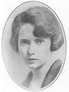

Margaret Munnerlyn Mitchell (November 8, 1900 – August 16, 1949) was an American author, who won the Pulitzer Prize in 1937 for her epic novel Gone with the Wind, her only major publication. This novel is one of the most popular books of all time, selling more than 30 million copies (see list of best-selling books). The film adaptation of it, released in 1939, became the highest-grossing film in the history of Hollywood, and it received a record-breaking ten Academy Awards (a record since eclipsed by Ben Hur, The Lord of the Rings: The Return of the King, and Titanic with eleven wins each). Mitchell has been honored by the United States Postal Service with a 1￠ Great Americans series postage stamp.
Early life
Margaret Mitchell was born in Atlanta, Georgia, to Eugene Mitchell, a lawyer, and Mary Isabelle, often referred to as Maybell, a suffragist of Irish Catholic origin. Mitchell's brother, Stephens, was four years her senior. Her childhood was spent in the laps of Civil War veterans and of her maternal relatives, who had lived through the Civil War.
After graduating from Washington Seminary (now The Westminster Schools), she attended Smith College, but withdrew during her freshman year in 1918. She returned to Atlanta to take over the household after her mother's death earlier that year from the great Spanish flu pandemic of 1918.
Shortly afterward, she defied the conventions of her class and times by taking a job at the Atlanta Journal. Under the name Peggy Mitchell she wrote a weekly column for the newspaper's Sunday edition, thereby making her mark as one of the first female columnists at the South's largest newspaper. Mitchell's first professional writing assignment was an interview with an Atlanta socialite, whose couture-buying trip to Italy was interrupted by the Fascist takeover.
Mitchell married Berrien “Red” Upshaw in 1922, but they were divorced after it was revealed that he was a bootlegger and an abusive alcoholic. She later married Upshaw's friend, John Marsh, on July 4, 1925; Marsh had been best man at her first wedding and legend has it that both men courted Mitchell in 1921 and 1922, but Upshaw proposed first.
She was a distant cousin to famous gunfighter and dentist, Doc Holliday, who participated in the Gunfight at the O.K. Corral. It is also thought[by whom?] that she modeled Ashley Wilkes, a main character in Gone with the Wind, after Holliday.
Writing Gone with the Wind
Mitchell is reported to have begun writing while bedridden with a broken ankle. The house where Mitchell lived while writing her manuscript is known today as The Margaret Mitchell House and located in Midtown Atlanta. The Special Collections department housed on the fifth floor of the Atlanta Fulton County Public Library in downtown Atlanta owns many personal items of Margaret Mitchell including her typewriter, her Pulitzer Prize, and her National Book Award. The Special Collections department also holds her Red Cross coat, her personal library, foreign editions of Gone With the Wind owned by Mitchell, gallery proofs for Gone With the Wind and various photographs and souvenirs. A museum dedicated to Gone with the Wind lies a few miles north of Atlanta, in Marietta, Georgia. It is called "Scarlett On the Square", as it is located on the historic Marietta Square. It houses costumes from the film, screenplays, and many artifacts from Gone With the Wind including Mitchell's collection of foreign editions of her book. The house and the museum are major tourist destinations. The 1994 TV movie A Burning Passion: The Margaret Mitchell Story, starring Shannen Doherty, told the story of Mitchell's professional and personal life through the time of the publication of "Gone With the Wind."
Clayton County, the area just south of Atlanta and the setting for the fictional O'Hara plantation, Tara, maintains "The Road to Tara" Museum in the old railroad depot in downtown Jonesboro.
For decades it was thought that Mitchell had written only one complete novel. (In fact, periodically claims are made that she never wrote it at all due to the lack of any other published work by her). But in the 1990s, a manuscript by Mitchell of a novel entitled Lost Laysen was discovered among a collection of letters Mitchell had given in the early 1920s to a suitor named Henry Love Angel. The manuscript had been written in two notebooks in 1916. In the 1990s, Angel's son discovered the manuscript and sent it to the Road to Tara Museum, which authenticated the work. A special edition of Lost Laysen — a romance set in the South Pacific — was edited by Debra Freer, augmented with an account of Mitchell and Angel's romance including a number of her letters to him, and published by the Scribner imprint of Simon & Schuster in 1996.
Mitchell relied on several primary source documents and eyewitness accounts written by women during the Civil War, including Life in Dixie During the War by Georgian writer Mary Gay and The Civil War Diaries of Mary Chesnut.
Publication
Mitchell lived as a modest Atlanta newspaperwoman until a visit from Macmillan editor Harold Latham, who visited Atlanta in 1935.[1] Latham was scouring the South for promising writers, and Mitchell agreed to escort him around Atlanta at the request of her friend, Lois Cole, who worked for Latham. Latham was enchanted with Mitchell, and asked her if she had ever written a book. Mitchell demurred. "Well, if you ever do write a book, please show it to me first!" Latham implored. Later that day, a friend of Mitchell, having heard this conversation, laughed. "Imagine, anyone as silly as Peggy writing a book!" she said. Mitchell stewed over this comment, went home, and found most of the old, crumbling envelopes containing her disjointed manuscript. She arrived at The Georgian Terrace Hotel, just as Latham prepared to depart Atlanta. "Here," she said, "take this before I change my mind!"
Latham bought an extra suitcase to accommodate the giant manuscript. When Mitchell arrived home, she was horrified over her impetuous act, and sent a telegram to Latham: "Have changed my mind. Send manuscript back." But Latham had read enough of the manuscript to realize it would be a blockbuster. He wrote to her of his thoughts about its potential success. MacMillan soon sent her a check in advance to encourage her to complete the novel — she had not composed a first chapter. She completed her work in March 1936.
Another version of the story goes that a mutual acquaintance also had told Latham that Mitchell had written a novel about Atlanta during the American Civil War and Reconstruction. After several failed attempts to obtain the manuscript from Mitchell, Latham finally succeeded in getting it from her in the lobby of the hotel as he was about to depart for New Orleans. Upon handing the manuscript to Latham, Mitchell said, “If you really want it you may take it, but it is incomplete and unrevised.”
Herschel Brickell, a famous literary critic for the New York Evening Post, reviewed Mitchell's book in an article titled " “Margaret Mitchell’s First Novel, ‘Gone With the Wind,’ a Fine Panorama of the Civil War Period.” His review helped launch Mitchell's career by calling attention to what would become one of the best novels of the Southern Renaissance. Over time, Brickell and Mitchell became extremely close; much of their correspondence has been published and is available in the archives at the University of Mississippi. Brickell was also a correspondent, friend, and adviser to other southern writers including Eudora Welty, Truman Capote, William Alexander Percy, Marjorie Kinnan Rawlings, Zora Neale Hurston, Stark Young and Allen Tate.[2]
Gone With the Wind was published on June 30, 1936. The book was arduously made into a film by David O. Selznick, and released three years later. The premiere of the film was held in Atlanta on December 15, 1939.
Gone with the Wind was such an overnight success that its publisher George Platt Brett, President of Macmillan Publishing, gave all its employees an 18% bonus in 1936.[3]
Death
Mitchell's grave in Oakland Cemetery in Atlanta
Mitchell was struck by a speeding automobile as she crossed Peachtree Street at 13th Street with her husband, John Marsh, on her way to see the British film A Canterbury Tale at The Peachtree Art Theatre in August 1949. She died at Grady Hospital five days later without regaining consciousness. The driver, Hugh Gravitt, was an off-duty taxi driver. He was driving his personal vehicle at the time, but his occupation led to many erroneous references over the years to Mitchell’s having been struck by a taxi. After the accident, Gravitt was arrested for drunken driving and released on a $5,450 bond until Mitchell's death several days later. It was discovered that he had been cited 23 times previously for traffic violations.[4] Georgia Gov. Herman Talmadge announced that the state would tighten regulations for licensing taxi drivers.[5]
Gravitt was later convicted of involuntary manslaughter and served 11 months in prison.[6] His conviction was controversial because witnesses said Mitchell stepped into the street without looking, and her friends claimed she often did this.
She was buried in Oakland Cemetery in Atlanta.